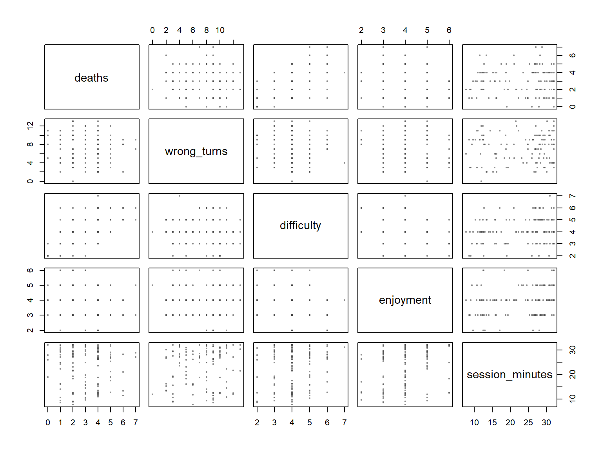
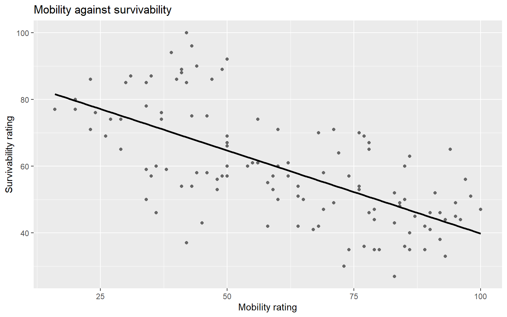

This is a clinic, not a full lab. It is short, and it ends with your team’s own data. The aim is one thing:
A correlation matrix of 3–5 meaningful measures from your own playtest, read and checked, with one relationship written up as a finding.
Part A is a warm-up on Tidebreak: measure relationships, choose between Pearson and Spearman, read a matrix, relate telemetry to self-report, and catch a relationship that reverses within groups. Part B is your project. Bring your team’s latest playtest export, in your project’s data/ folder.
Function
What it does
cor(x, y)
Pearson correlation, −1 to +1
cor(x, y, method = "spearman")
Spearman correlation: for ratings, curves and outliers
select() then cor()
A correlation matrix of the columns you chose
pairs()
Every pair as a small scatterplot, to check the matrix
left_join()
Add columns from another table, matched on a key
group_by() + summarise(r = cor(...))
The correlation within each group
Learning outcomes
By the end of this clinic you can:
measure a relationship with cor(), and choose between Pearson and Spearman;
build and read a correlation matrix of 3–5 measures, and check it with scatterplots;
relate a telemetry measure to a self-report measure, and say what it means when they disagree;
check a relationship within groups before trusting it;
write a relationship as a finding without claiming a cause.
Ground rules
Draw before you quote. Every correlation stands in for a scatterplot.
Choose your measures for a question. A matrix of every column finds luck.
Write “is associated with”, never “causes”, unless someone changed something on purpose.
Type the code. Open the solution after your attempt.
Use cor() to measure how strongly score is related to awareness, and to shots_fired.
NoteShow solution
cor(sessions$awareness, sessions$score)
[1] 0.5907852
cor(sessions$shots_fired, sessions$score)
[1] 0.05307857
cor() gives a number from −1 to +1. Near 0 means no straight-line relationship; the sign gives the direction.
Write 2 sentences: a designer wants to reward players who fire more shots, “because they are the ones scoring”. What do you tell them?
Exercise 02 — Pearson or Spearman? [Apply]
Do players who die more rate the game as harder? Draw difficulty against deaths, then compute both the Pearson and the Spearman correlation. Which would you report, and why?
NoteShow solution
ggplot(sessions, aes(x = deaths, y = difficulty)) +geom_jitter(width =0.15, height =0.15, alpha =0.6) +labs(x ="Deaths", y ="Difficulty rating (1-7)")
The two agree closely, because the relationship is roughly straight with no wild values. Report Spearman anyway: difficulty is a 1–7 rating, so the gaps between its values are not known to be equal, and Spearman only uses their order. geom_jitter() nudges the points so that sessions with the same values do not hide each other.
Write 1 sentence: describe the relationship in words a designer would use, including how loose it is.
Exercise 03 — A correlation matrix [Apply]
Build a Spearman correlation matrix of deaths, wrong_turns, difficulty, enjoyment and session_minutes, rounded to 2 places. Then draw every pair with pairs(). Which pair goes together most strongly, and which measure goes with nothing?
pairs(m, pch =19, cex =0.4, col =adjustcolor("grey30", alpha.f =0.4))

Ignore the diagonal of 1s and read one triangle. deaths and difficulty go together most strongly, 0.57. wrong_turns is close to 0 with every other measure. The pairs() panels agree: one rising band for deaths and difficulty, shapeless clouds for wrong turns.
Write 2 sentences: wrong turns differ hugely between the builds, yet correlate with nothing here. Why might that be, and what would you check next?
Exercise 04 — Telemetry against self-report [Apply]
Do players who got lost more rate the level as harder to navigate? Join the survey onto the sessions with left_join(), matching on session_id. Then find the Spearman correlation between wrong_turns and level_navigable, and each build’s mean of both.
NoteShow solution
joined <- sessions |>left_join(survey, by ="session_id")cor(joined$wrong_turns, joined$level_navigable, method ="spearman")
[1] 0.05151128
joined |>group_by(build) |>summarise(mean_wrong_turns =mean(wrong_turns),mean_navigable =mean(level_navigable))
# A tibble: 2 × 3
build mean_wrong_turns mean_navigable
<chr> <dbl> <dbl>
1 A 8.92 3.2
2 B 5.52 3.23
The correlation is 0.05: no relationship. Build A’s players made far more wrong turns but rated navigation almost exactly as Build B’s did, 3.2 against 3.23. The telemetry saw a navigation problem; the players did not report one.
Write 3 sentences: what does this mean for a team that only asks players whether the level was easy to navigate? What would observation add?
Exercise 05 — The trade-off [Apply]
Draw survivability against mobility as a scatterplot with a straight-line trend, and measure the relationship with cor().
NoteShow solution
ggplot(sessions, aes(x = mobility, y = survivability)) +geom_point(colour ="grey40") +geom_smooth(method ="lm", se =FALSE, colour ="black") +labs(title ="Mobility against survivability",x ="Mobility rating", y ="Survivability rating")

cor(sessions$mobility, sessions$survivability)
[1] -0.6562375
geom_smooth(method = "lm") draws the straight line that best fits the points; se = FALSE leaves out the shaded band. The line and cor() describe the same relationship, one as a picture and one as a number.
Write 1 sentence: describe the relationship in words a balance designer would use.
Exercise 06 — Faster players are more fragile? [Decide]
The balance designer reads Exercise 05 and proposes a patch: “Faster players are more fragile, so when a Scout player gets faster, cut their health to match.” Redraw the scatterplot with each archetype in its own colour and its own trend line, compute the correlation within each archetype, and decide whether the patch follows from the data.
NoteShow solution
ggplot(sessions, aes(x = mobility, y = survivability, colour = archetype)) +geom_point() +geom_smooth(method ="lm", se =FALSE) +labs(title ="Mobility against survivability, by archetype",x ="Mobility rating", y ="Survivability rating", colour ="Archetype")
One defensible answer: no, the patch reads the data backwards. Across all players the correlation is -0.66. Within every archetype it is positive, from 0.3 to 0.6. The downward trend is the gap between archetypes: Scouts are built fast and fragile, Sentinels slow and tough. Within any one archetype, better players are better at both. Archetype is the confounding variable: it drives both measures, and ignoring it reverses the direction of the relationship.
What makes it defensible. It checks the relationship inside the groups the design is made of before drawing a conclusion about individuals, and it says what the overall correlation does show: the archetypes are balanced against each other as intended.
What would make it indefensible. Applying the patch because the correlation is strong. A strong correlation across groups says nothing about what happens to one player within a group.
Write 3 sentences: name the confounder, say what it does to the conclusion, and say which section of the report (Results or Discussion) this belongs in.
Part B — Your project [Decide]
This is the part that matters. Allow at least half the clinic for it.
Work through these steps on your team’s own playtest data, in a Quarto document in your project.
Write the design question the relationships bear on, in one sentence.
Choose 3–5 numeric measures that matter to it. Aim for at least one from telemetry and one from self-report, so you can see whether they agree. Join files on a shared ID with left_join() if they are separate.
Build the matrix: select() the measures, then cor(method = "spearman") if any is a rating, and round(2).
Check it with pairs(). Any correlation whose scatterplot does not look like its number is not to be trusted.
Pick the one relationship that matters most to your question, and draw it properly with ggplot2.
Check it within groups: build, level, character or experience, whichever your game has. Does it hold inside each?
There is no single right matrix: it depends on your game and your question. Check your work against this list.
Exercises 03, 04 and 06 are worked versions of steps 3 to 6 on Tidebreak.
Write 3–4 sentences, using What → Pattern → Meaning → Action, for the one relationship that matters most:
What did you measure, on whom, and how many?
Pattern: how strongly do the two measures go together, and does it hold within groups?
Meaning: what might explain it? Name at least one explanation other than cause.
Action: what would the team test next to find out which explanation is right?
Extension — How much, not just how strongly [Apply]
For anyone who finishes early. A correlation says how tightly two measures go together; a regression line says how much one changes with the other. This is Going Further material, explained on Regression.
Fit a regression of score on awareness with lm(). Report the slope with its 95% confidence interval, then list the seven sessions that scored furthest below what their awareness predicted.
NoteShow solution
fit <-lm(score ~ awareness, data = sessions)coef(fit)
Each extra point of awareness goes with about 15.2 more points of score on average (95% CI 11.4 to 18.9). resid(fit) is actual minus predicted, so order() puts the biggest underperformers first. 6 of the seven are Sentinels: the collapsing games, which awareness does not explain at all.
Write 2 sentences: turn the slope into a sentence a balance designer could use, then say what the regression cannot tell them.
Appendix — Common errors
WarningShow the error guide
Message or symptom
What it usually means
'x' must be numeric
A text column got into cor(). select() only numeric measures
NA in the matrix
A column has missing values. Add use = "complete.obs" to cor(), and say how many rows it left out
the standard deviation is zero
A measure has the same value in every row: it cannot correlate with anything
A matrix of every column you have
Choose 3–5 measures for your question instead
left_join() gives more rows than you started with
The key is repeated in the second table. Check it with count(key) \|> filter(n > 1)